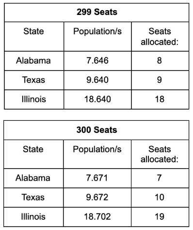
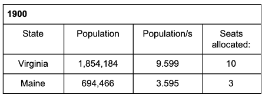
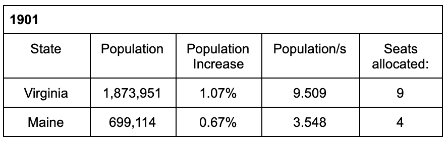
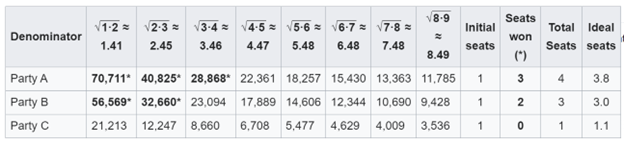
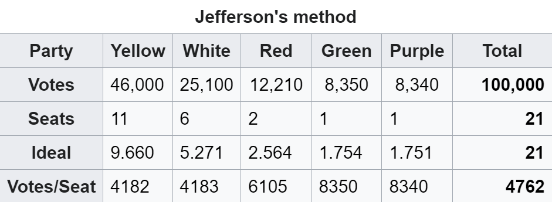

1 Electoral Votes Apportionment
1.1 To win US presidency: 270 electoral votes
Total electoral votes (electors): 538
Senators: \(50 \cdot 2 + 435\) (Congress) \(+ 3\) (Washington D.C., not considered as a state)
1.2 How the 435 congressional seats are distributed?
By population of each state
Principle: equal representation (votes per seat)
Each state must have at least one Congressional seat (50)
Remaining \(435-50= 385\).
1.3 How to solve the problem
Calculation of a Congressional apportionment requires three factors
- the apportionment population of each state,
- the number of representatives to be allocated among the states,
- and a method to use for the calculation.
1.4 What populationt to use?
Article 1, Section 2, of the Constitution sets the basis: Decennial census of population (1790-present, except 1920), with the provision that each state must have at least one representative.
1.5 Ideally: Hare Quota (votes per seat)
\[ \text{votes per seat }(\lambda)= \frac{\text{Total US population }(P)}{435}\,. \] \[ \begin{aligned} \textbf{entilted} \text{ seats of each state }(t^*_i)&= \frac{\text{Total state population }(P_i)}{\lambda}\,\\ \sum_{i=1}^n{t^*_i}&=1\,. \end{aligned} \]
Problem: \(t^*_i\) is in general fractional. Not practical.
1.6 Method of Fixed Ratio
- Rounding up
- Rounding down
- Standard rounding (round 5 up and 4 down)
New problem: variable seats (too many or too few)
1787-1790 (first enumeration): 65 set by the Constitution
1790-1830 (Jefferson method: fixed ratio with rounding down): resulting 105 seats.
1840 (Webster method): fixed ratio with standard rounding.
1.7 Toy Example
- Total population: 24000
- Total seats: 8
- Hare quota: \(\frac{24\, 000}{8}=3\,000\)
| A | B | C | Total | |
|---|---|---|---|---|
| \(P_i\) | 3000 | 6000 | 15000 | 24000 |
| \(t_i\) | 1 | 2 | 5 | 8 |
1.8 Toy Example
| A | B | C | Total | |
|---|---|---|---|---|
| \(P_i\) | 2000 | 7000 | 15000 | 24000 |
| Ideal (\(t_i\)) | 0.67 | 2.33 | 5 | 8 |
| rounding down | 0 | 2 | 5 | 7 |
| rounding up | 1 | 3 | 5 | 9 |
| standard rounding | 1 | 2 | 5 | 8 |
| Webster w/ fixed ratio (3.3) | 1 (\(\approx 0.61\)) | 2 (\(\approx 2.12\)) | 5 | 8 |
1.9 Toy Example
| A | B | C | Total | |
|---|---|---|---|---|
| \(P_i\) | 2000 | 7000 | 15000 | 24000 |
| Ideal (\(t_i\)) | 0.67 | 2.33 | 5 | 8 |
| Webster w/ fixed ratio (3.3) | 1 (\(\approx 0.61\)) | 2 (\(\approx 2.12\)) | 5 | 8 |
1.10 Fixed House Size
- 1911: House size was fixed at 433 with provision for the addition of one seat each for Arizona and New Mexico when they became states (U.S. Statutes at Large, 37 Stat 13, 14 (1911))
- The House size, 435 members, has been unchanged since, except for a temporary increase to 437 at the time of admission of Alaska and Hawaii as states (following the 1950 census until the 1960 census).
1.11 Mathematical Formulation
Given \((t_1,t_2,\cdots, t_k)\), find a vector of non-negative integers \((n_1,n_2,\cdots, n_k)\), such that \[ \begin{aligned} \sum_{i=1}^k{t^*_i}&=1\\ \sum_{i=1}^k n_i &=h\,. \end{aligned} \] \[\text{minimize expectated } \textbf{ errors or seat bias}\,.\] e.g. favoring smaller parties, or large parties, etc.
1.12 Quota Rule
The quota rule describes a desired property of proportional apportionment methods. It says that the number of seats allocated to a party should be equal to their entitlement plus or minus one.
1.13 How to solve the problem with fixed house size (1850-1900)?
- Largest remainder method(Hamilton/Vinton method) first assign integral seats to each state, then assign the remaining seat one at a time with the largest remainder.
- Advantage: Meet the quota rule
- Problem: sbj. population, Alabama, no-show paradox.
- Had Congress used Webster or Hamilton’s method (as it had since 1840), the 1876 election would have gone to Tilden instead of Hayes.
1.14 Toy Example-Highest Remainder
| A | B | C | Total | |
|---|---|---|---|---|
| \(P_i\) | 2000 | 7000 | 15000 | 24000 |
| Ideal (\(t_i\)) | 0.67 | 2.33 | 5 | 8 |
| initial allocation | 0 | 2 | 5 | 7 |
| Highest reaminder | 1 | 0 | 0 | 1 |
| Final allocation | 1 | 2 | 5 | 8 |
1.15 Apportionment Paradoxes
- Alabama Paradox A state could receive fewer representatives if the size of the House increased. 
1.16 Apportionment Paradoxes
- Population paradox \(A\) grows at a faster rate than \(B\), i.e., \({ A/B}\) increases, then \({ A}\) should not lose a seat while \({B}\) gains a seat.


1.17 Apportionment Paradoxes
- No-show paradox A particularly severe variant, where voting for a party causes it to lose seats.
- Spoiler effect: a spoiler is a losing candidate who affects the results of an election simply by participating, causing voters to change their opinions.
1.18 How to solve the problem with fixed house size (1910, 1930)
- (1910, 1930) Webster method with a pre-selected fixed ratio: The ratio was selected (trial-and-error) so that the result would be the predetermined size of the House of Representatives.
1.19 How to solve the problem with fixed house size
- Highest vote average (votes per seat): Starting from 0 for each state, assign a seat one a time to the state that has the highest vote average per seat.
Average by dividing \(P_i\) by
- \(n\)
- \((n+1)\)
- between \(n\) and \((n+1)\) (continuity correction)? which one?
1.20 Highest Vote Average (votes per seat) Method (Divisor Method)
- Adam (divided by the current seats \(n\); rounding up)
- Jefferson/D’Hondt (divided by \((n+1)\); rounding down) favors large parties. “ghosts of departed representatives”
- Webster/Saine-Lagne (divided by \(n+\frac{1}{2}\), standard rounding: unbiased in terms of expected seat bias).
- Huntington-Hill (Method of equal proportions) (divided by \(\sqrt{n\cdot(n+1})\), Geometric rounding): unbiased in terms of relative percentage error, adopted by U.S. Congress (US code Title 2) in 1941 following the census of 1940.
1.21 Comparison and historical anecdotes
Huntington-Hill’s method and Webster’s method very similar;
when first used, differed only in whether assigned a single seat to Michigan or Arkansas.
Following the 1990 census, two lawsuits concerning apportionment issues were filed in federal courts. The U.S. Supreme Court held that the method of equal proportions was constitutional;
US Department of Commerce v. Montana 112 S.Ct. 1415 (1992) and Franklin v. Massachusetts 112 S.Ct. 2767 (1992).
1.22 Propoerties of Divisor Methods (Highest Vote Averge)
- Monotoniciy: voting for a party can never cause it to lose seats (No-show paradox)
- House Monononiciy: Increasing the number of seats should not case a state to lose a seat (Alabama Paradox)
- Min-Max inequality: It is impossible to lower the highest vote average by reassigning a sear from one party to another. \[ \max \left\{\frac{\text{votes[party]}}{\text{post(seats[party])}}\right\} \le \min \left\{\frac{\text{votes[party]}}{\text{post(seats[party])}+1}\right\} \]
1.23 Huntington-Hill Method( Equal Proportions Method): 1940-
Every party begins with 0 seats. Then, at each iteration, allocate a seat to the party with the highest vote average (votes per seat) divided by \(\sqrt{n(n+1)}\).
Minimizes the relative difference in the number of constituents represented by each legislator. In other words, no transfer of a seat from one state to another can reduce the percent error in representation for both states.
Conceptually, this method rounds to the integer that has the smallest relative (percent) difference.
1.24 Huntington-Hill Method (Details)
Compute a priority value \[ A_n=\frac{P_i}{\sqrt{n(n+1})},\quad n: \text{seats before allocaiton}\,. \]
- \(51\)st \(\rightarrow\) California with the largest \(A_1\).
- \(52\)nd \(\rightarrow\) Texas, because its \(A_1>A_n\) of any other state.
- \(53\)st \(\rightarrow\) California because its \(A_2>A_n\) of any other state.
- \(54\)th \(\rightarrow\) New York because its \(A_1>A_n\) of any other state at this point.
1.25 Toy Example
| A | B | C | Total | |
|---|---|---|---|---|
| \(P_i\) (\(t_i\)) | 2000(0.67) | 7000(2.33) | 15000(5) | 24000(8) |
| initial allocation | 1 | 1 | 1 | 3 |
| \(/\sqrt{1\cdot 2}\) | 1414 | 4959 (6th) | 10607(4th) | 2 |
| \(/\sqrt{2\cdot 3}\) | 816 | 2858 | 6124 (5th) | 1 |
| \(/\sqrt{3\cdot 4}\) | 577 | 2021 | 4330 (7th) | 1 |
| \(/\sqrt{4\cdot 5}\) | 447 | 1566 | 3354 (8th) | 1 |
| Final allocation | 1 | 2 | 5 | 8 |
| Actual votes/seat | 2000 | 3500 | 3000 |
1.26 Example
- \(P_A=100\,000\), \(P_B=80\,000\), \(P_C=30\,000\), \(P_A+P_B+P_C=210\,000\).
- Total number of seats \(=8\).
- Ideal seats =\(\frac{P_i}{P_A+P_B+P_C}\cdot 8\). 
1.27 Ghost of Departed Representatives
 The Yellow Party: has only \(46\%\) of votes, but won \(11/21\approx 52\%\) majority seats. Violating the Majority-preserving clause.
1.28 Balinski-Young Theorem (1980)
Any method that follows the quota rule must fail the population paradox.
Any method that is free of the population paradox must fail the quota rule for some circumstances.
Largest remainder method satisfies the quota rule, it violates the Alabama paradox and the population paradox.
The highest averages methods violate the quota rule, avoid population paradox and no-show paradox. Not sensitive to spoiler effect. only do so (violate quota rule) rarely.
1.29 Why use geometric mean?
Given two positive numbers \(a\) and \(b\), then the geometric mean of \(a\) and \(b\) is \[ G=\sqrt{ab}\,. \] AM-GM theorem: \[ \sqrt{ab}\le \frac{a+b}{2}\,. \] The equality is true if and if \(a=b\).
1.30 GM-equal relative error
\[ a \quad \sqrt{ab} \quad \frac{a+b}{2}\quad b \] \[ \frac{\sqrt{ab}}{a}=\frac{b}{\sqrt{ab}}\,, \] that is, the two relative percentage errors are equal: \[ \frac{\sqrt{ab}-a}{a}=\frac{b-\sqrt{ab}}{\sqrt{ab}}\,. \]
1.31 GM-Example
For example, if \(a=2\) and \(b=3\), then \(\sqrt{2\cdot 3} \approx 2.45\). Therefore, for \(x=2.48\), if performing geometric rounding, \(2.48\approx 3\). This rounding minimize the percentage error: \[ \frac{2.48-2}{2}=24\% < \frac{3-2.48}{2.48}\approx 21\% \,. \]